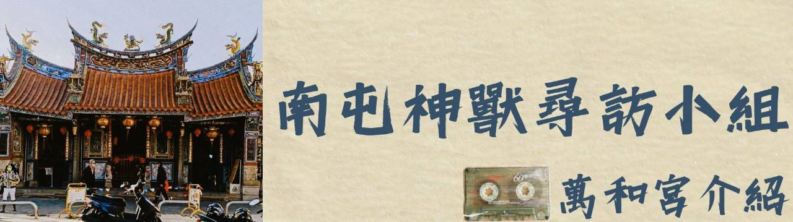

傳說

「老二媽」雕塑於嘉慶八年（1803年），據說當年「老二媽」金身雕塑完畢，正要開光點眼的時候，一位在萬和宮販賣針線女紅的商人遇到一位家住在西屯大魚池的廖姑娘。 這位姑娘本名廖品娘，她請那位商人轉告她的父母，家門前的樹下埋著兩枚龍銀，並且請父母不要傷心難過。
該名商人當然一頭霧水，但還是親自到廖品娘的家轉告她的父母。 廖品娘的父母覺得不對勁，趕忙進屋內探視女兒，卻發現女兒已經沒了氣息。 兩人急忙趕到萬和宮，看到剛開光完畢的「老二媽」金身眼中流下一滴眼淚。 此時，父母二人才知道女兒已經羽化，成為萬和宮的「老二媽」。